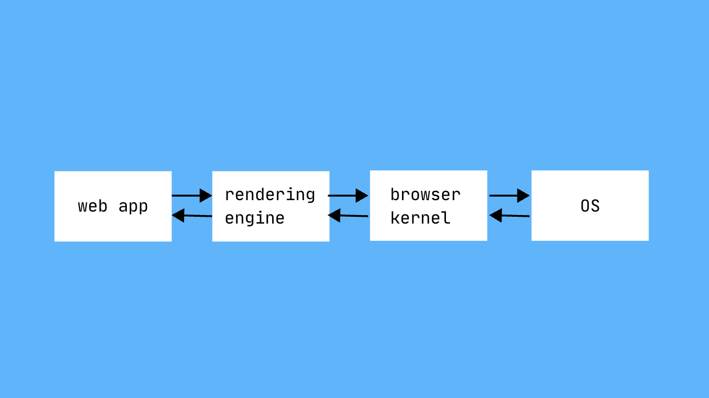

Research

Review of Control-Flow Integrity Solutions for Agents
June 16, 2026 · Noah Wong
In 1977, Denning & Denning published Certification of Programs for Secure Information Flow, which laid out the Lattice Model of Information Flow. Essentially, each piece of data was given a security class...

Dynamic Plan Validation and Injection Isolation Against Prompt Injection
June 11, 2026 · Arnav Tripathy
CaMeL, despite its thoroughness, has been shown to be incredibly expensive to implement on a large scale. Another problem that I didn't foresee until reading about DRIFT was the inflexibility of the system; security policies were static, unmoving...

Architectural Separation of Instruction and Data States in Agent Frameworks
June 9, 2026 · Noah Wong
In Von Neumann computer architecture, instructions and data were the same thing: bits. Instructions and data were together in memory, and there was no architectural distinction. Developed during the same era, the Harvard computer architecture separated instruction...

Capability-Based Data Flow Enforcement Against Prompt Injection
June 9, 2026 · Arnav Tripathy
The release of Anthropic's Fable 5 is interesting in that it doesn't let the powerful model handle all the tasks on its own; for topics like cybersecurity or biology, where "state-of-the-art" knowledge could be misused, Fable automatically hands off queries to the weaker Opus 4.8...

Mitigating Post-Exploitation Scope Through Syscall Filtering
May 25, 2026 · Noah Wong
Post-exploitation, from a defensive perspective, involves limiting attackers' access to program resources. The threat model assumes that a program is exploitable, but that the attacker's post-exploitation strategy requires additional resources within the program...

Chrome's Security Architecture: Renderer Trust and the Same-Origin Policy
May 17, 2026 · Noah Wong
Chromium's architecture was designed to protect a user's OS from malicious websites. It is not designed to protect websites from each other. For example, if attacker.com compromises the rendering engine, they can ask the browser kernel for bank.com's data and receive it...